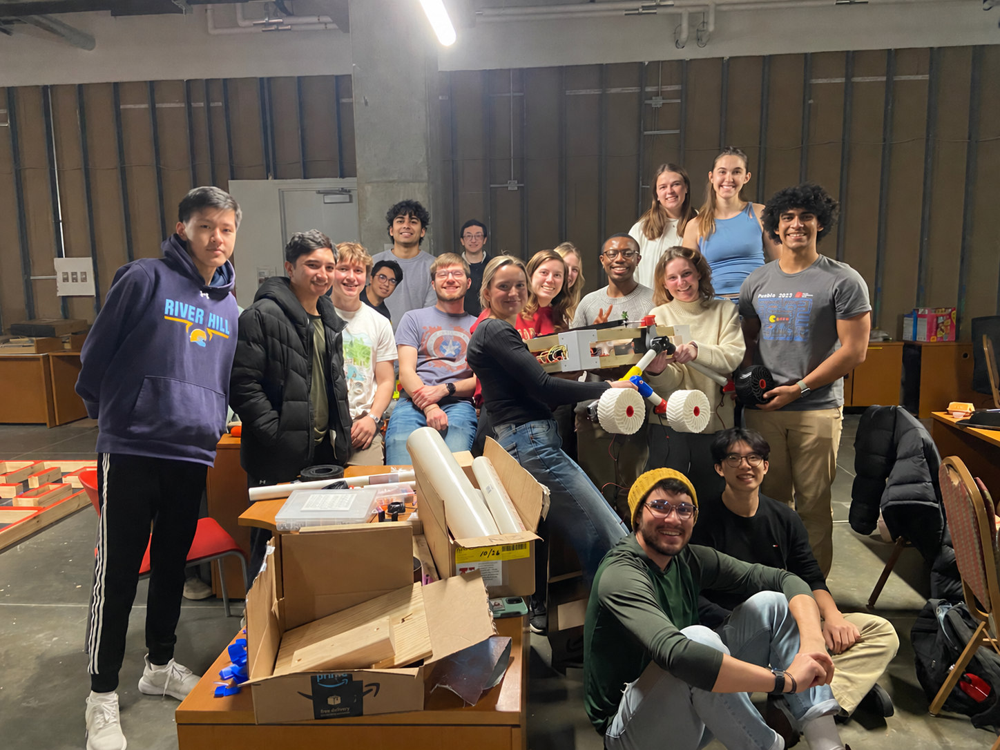
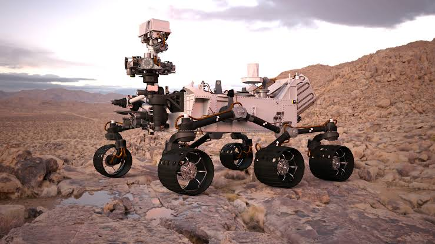

Competition robotics · WashU
Mars Rover Arm & Claw
Robotic arm and end-effector development, including actuator selection, load calculations, CAD, machining, and prototyping.
- Role
- Arm Design Lead · 2026–27
- Context / status
- Team member since 2024–25 · Ongoing
- Tools & methods
- SolidWorks · Torque analysis · MATLAB · Machining · Mechanism design

01
Overview
WashU’s Mars Rover Team develops a rover for the University Rover Challenge, bringing together mechanical, electrical, and software work. The team’s platform development includes an aluminum chassis, custom 3D-printed TPU wheels, suspension, and a five-degree-of-freedom robotic arm.
Beyond the mechanisms, teammates work on onboard computing, long-range wireless communication, power management, and ROS-based teleoperation and autonomous functionality. A parallel drone effort explores sending waypoints to the rover. These are broader team efforts; my focus is the arm and claw.
I joined for the 2024–25 season, continued through 2025–26, and currently lead arm design for 2026–27.
02
My contribution
My work spans SolidWorks design, motor and actuator selection, torque calculations, MATLAB simulation, machining, and claw prototyping. As the current arm design lead, I help connect those tasks into a practical design direction and coordinate interfaces with the rover’s other subsystems.
I develop components in CAD, work through their geometry and assembly, and use analysis to inform component choices. I’ve also machined precision aluminum parts on the mill and lathe and built prototypes to evaluate how designs behave outside the model.
03
Design & development
Arm design and analysis
Mechanical layout & packaging
The arm must balance reach, useful motion, stiffness, and mass. I work through joint placement, link geometry, actuator mounting, and the interface with the chassis. CAD provides a way to examine clearances, potential collisions, assembly access, and the space needed by the moving hardware.
Torque calculations & actuator selection
I use torque calculations to estimate the loads that joints and actuators need to support. The analysis considers link weight, downstream hardware, payload, and their distances from each joint. Extended configurations matter because larger moment arms can substantially increase the required torque.
Motor selection also requires considering speed, mass, mounting, power requirements, and compatibility with the electronics. For linear-actuator arrangements, changes in linkage geometry affect mechanical advantage throughout the arm’s motion.
MATLAB modeling & simulation
I use MATLAB to explore arm behavior and support the design calculations. Modeling helps investigate how configuration and loading affect the mechanism before committing to hardware. It connects individual calculations to the arm’s operating range and identifies conditions that deserve closer attention during testing.
Fabrication & integration
Machining parts and assembling prototypes makes manufacturing constraints part of the design process. Tool access, tolerances, fastener placement, and alignment can all influence the final geometry. I also coordinate with teammates working on electronics, sensing, vision, and controls so the arm can function within the complete rover.
Claw development
The claw connects the arm to the task. It needs useful opening travel and reliable contact while remaining compact and light enough for the rest of the arm to support.

Finger geometry
Finger geometry, opening range, and contact surfaces influence how the claw engages an object.
Grip actuation
The actuation arrangement must fit the mechanism while supporting useful grip and travel.
Prototype evaluation
Prototypes expose alignment, assembly, and clearance issues that can be hard to judge in CAD.
I develop and iterate claw concepts with those tradeoffs in mind. Physical prototypes help evaluate how fingers contact objects, how the mechanism assembles, and where interference appears. Each iteration informs changes to the geometry, mounting, and overall integration.
04
Results & next steps
Developed arm and claw CAD, supported actuator decisions with torque calculations and MATLAB modeling, and fabricated aluminum components and physical prototypes. I now lead arm design and coordinate interfaces with the rover’s other subsystems.
Current development focuses on refining geometry, assembly, and end-effector integration. Prototype evaluation continues to guide revisions.